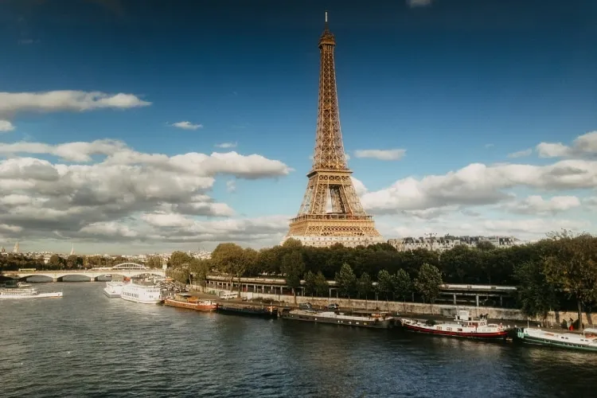
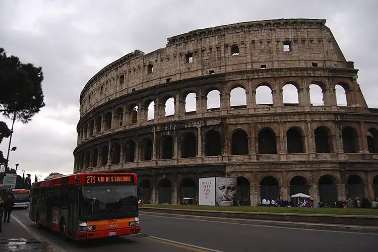
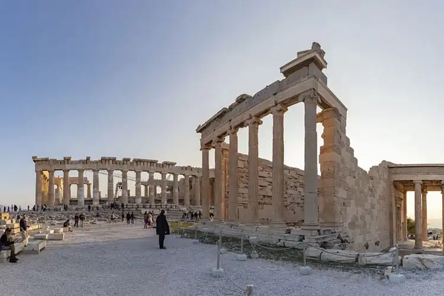

Lugares turisticos na Europa
Os melhores roteiros para sua viagem.
1. Torre Eiffel, em Paris

Um dos monumentos mais emblemáticos e reconhecidos mundialmente,
a Torre Eiffel é um dos maiores símbolos de Paris e da França como
um todo. Sua história remonta ao final do século XIX, especificamente
aos anos de 1887 a 1889, quando foi construída para ser a peça central
da Exposição Universal de Paris, um evento que celebrava o centenário
da Revolução Francesa.
2. Coliseu, em Roma

O Coliseu de Roma é um dos pontos turísticos na Europa e essencial em
qualquer visita à capital italiana. De fora, nota-se que o monumento
ainda se mostra capaz de permanecer em pé, resistindo às intempéries
do tempo — inclusive terremotos.
3. Acrópole de Atenas

É claro que o berço da civilização ocidental estaria nesta lista dos pontos
turísticos na Europa. A atração de maior importância histórica da Grécia é a
Acrópole de Atenas, um sítio arqueológico com origem no século V a.C. que
existiu com diversas funções: centro político, santuário religioso e mesmo
fortificação militar.